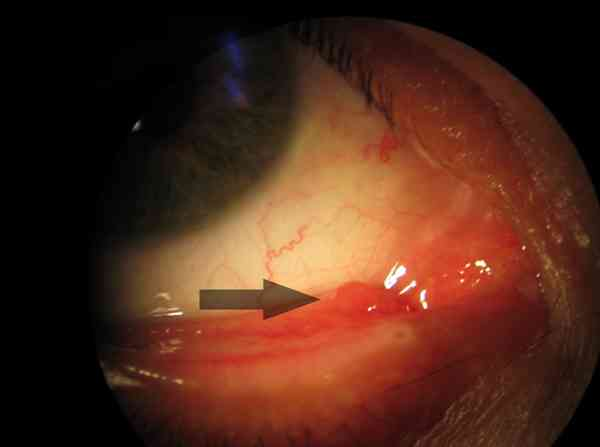

Chalazion
AdulteSpécialité : ophtalmologie /
Points importants
-
Localisation en pleine paupière :
- engorgement d'une glande de Meibomius
- trois stades : inflammatoire, enkysté, fistulisé
- objectivé à la palpation
- N'affecte pas l'oeil ou la surface oculaire
- Le chalazion n'est pas une infection
Présentation clinique / CIMU
SIGNES FONCTIONNELS
- Tension palpébrale permanente
- Douleur exquise à la palpation du chalazion au stade inflammatoire
- Impression de kyste sous-cutané au stade enkysté (non urgent)
- Ecoulement de pus au stade fistulisé (non urgent)
- Peut être multiple
- Localisation possible sur les 4 paupières
CONTEXTE
Terrain
- Adolescent ou adulte jeune
- Patient atteint d'acné rosacée ou de rosacée oculaire
EXAMEN CLINIQUE
 _134
- Interrogatoire : recherche de chalazion antécédent
- Palpation des 4 paupières
EXAMENS PARACLINIQUES SIMPLES
- NA
CIMU
- Tri 5
Diagnostic étiologique
- Maladie rosacée cutanée ou oculaire
Diagnostic différentiel
- Orgelet
- Adénocarcinome ou autres tumeurs malignes palpébrales
Traitement
TRAITEMENT HOSPITALIER
- Aucun aux urgences
- Cf. ordonnance de sortie
MEDICAMENTS
- Cf. ordonnance de sortie
Devenir / orientation
ORDONNANCE DE SORTIE
Contre-indication si herpès oculaire
- Ster-Dex pommade ophtalmique : une application x 3/j, pendant 10 jours entre la paupière et l'oeil et en massage de paupière
RECOMMANDATIONS DE SORTIE
- Consulter un ophtalmologiste pour contrôle dans 8 jours
Mécanisme / description
- Le chalazion résulte de l'engorgement des glandes de Meibomius palpébrales, généralement par obstruction des méats et canaux excréteurs des glandes
- Le meibome est excrété par des petits canaux qui s'abouchent sur le bord libre des paupières
- Le meibome étant huileux, s'il s'accumule dans la glande, une inflammation se produit, du pus aseptique se forme : le chalazion n'est pas une infection
- Le traitement consiste en la réouverture des canaux par anti-inflammatoire local ou par fistulisation (chirurgicale ou naturelle)
Bibliographie
- Jean-Marc Ruban. Etude anatomo-clinique et traitement du chalazion. Dans : Questions d'ophtalmologie. Ed Laboratoires Chauvin Blache, 1986
- Alan Stevens, James Lowe, Claude Gompel. Anatomie pathologique générale et spéciale. Ed De Boeck Université, 1996- Page 439
Auteur(s) : Jean-Louis BOURGES